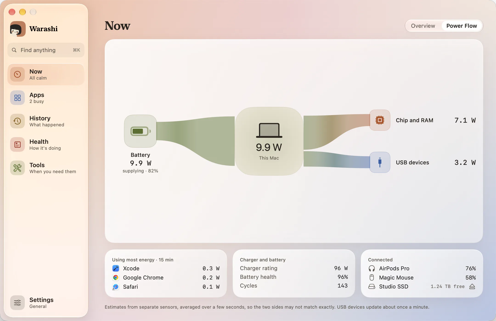

La durata della batteria dipende da cosa è in esecuzione, da quanto spesso sveglia il chip e da quanto lavora la GPU. Alcune app costano molto solo mentre le usi; altre scaricano in background tutto il giorno.
Controlla Energia in Monitoraggio Attività
Apri la scheda Energia di Monitoraggio Attività. “Impatto energia” è un punteggio relativo per ora; “Consumo 12 ore” mostra la media delle ultime 12 ore. Cerca le app con numeri alti che non stavi usando attivamente.
Cause comuni di consumo della batteria
- Schede del browser con video, pubblicità o dashboard in tempo reale, anche in background.
- App che tengono occupata la GPU: monitor esterni con frequenza di aggiornamento alta, sfondi animati, videochiamate.
- Sincronizzazione e indicizzazione dopo aggiornamenti o grandi modifiche ai file (analisi di Foto, Spotlight).
- App Electron che hai lasciato aperte ma non stai usando.
Distingui “in primo piano” da “in background”
La domanda utile non è solo “cosa ha usato energia?” ma “quanto è costato per ogni ora in cui l'ho usato davvero, e cosa si è scaricato mentre non guardavo nemmeno?”. Tempo × Costo di Warashi risponde proprio a questo, usando i contatori di energia per processo di macOS.
Tieni d'occhio la salute della batteria
La salute della batteria cala lentamente con i cicli di carica e il calore. La trovi in Impostazioni di Sistema › Batteria; Warashi può avvisarti quando scende sotto l'80% o cala più in fretta del solito.


